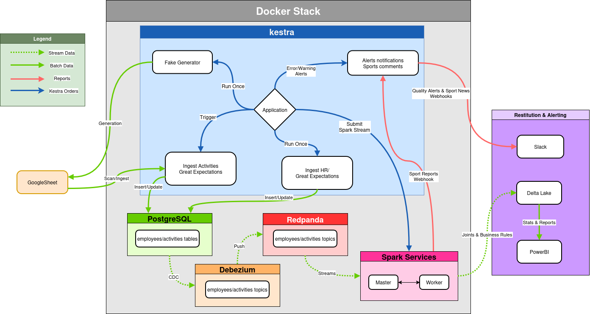

← portfolio • projet P12 — RNCP Niveau 7
// architecture de données événementielle — Medallion · Event-Driven · IA
Pipeline de données de bout en bout pour Sport Data Solution — du générateur d'activités Faker à la restitution Power BI, en passant par CDC temps réel, enrichissement IA (Gemini RAG), Spark Streaming et Delta Lake. Architecture Medallion Bronze→Silver→Gold entièrement conteneurisée sous Docker, orchestrée par Kestra.
Sport Data Solution souhaite valoriser l'activité physique de ses collaborateurs via deux avantages : une prime de 5% du salaire brut pour les trajets domicile-travail en mobilité douce, et 5 jours bien-être annuels pour les salariés pratiquant au moins 15 activités par an. La mission : concevoir le POC du pipeline de bout en bout — de l'ingestion des données RH au dashboard décisionnel.
Paradigme Event-Driven avec CDC — chaque modification PostgreSQL déclenche en temps réel la chaîne de transformation.
wal_level=logical activé pour le CDC.
Architecture complète — sources, orchestration Kestra, CDC Debezium/Redpanda, Spark Streaming, Delta Lake, restitution